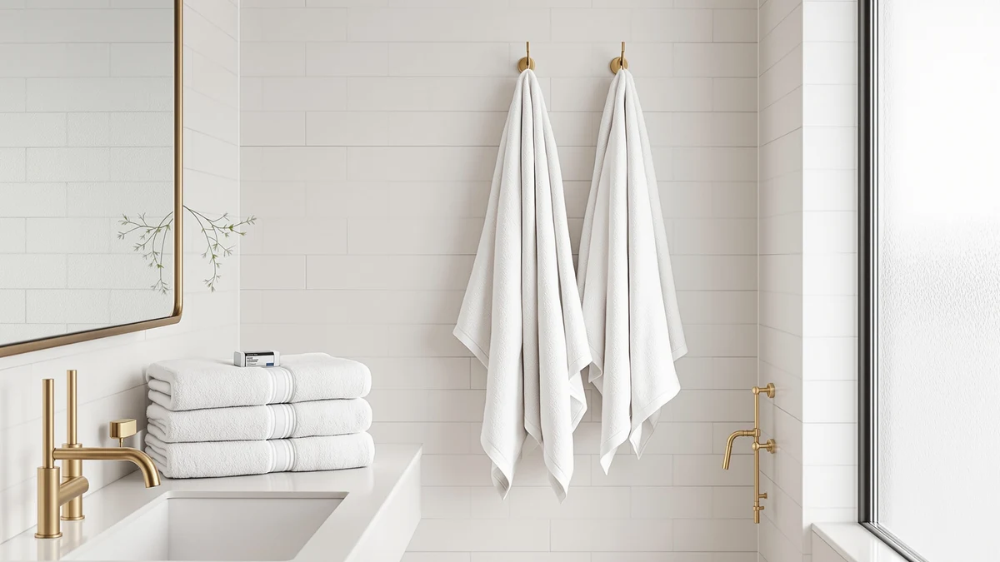

LANE LINEN Bath Towel Review (2026): Worth It?
Prices and picks verified as of September 2026. Independent, reader-supported reviews.


Quick Answer
The LANE LINEN Bath Towel Set is a 24-piece 100% ring spun cotton set that costs about $2.71 per piece, well below any six-piece competitor we compared it against. It trades a premium cotton grade for sheer coverage, making it the pick for households or rentals that need a full bathroom restock in one order.
Our pick: LANE LINEN Bath Towel Set, $64.99 Check Price on Amazon
Bottom line: our top pick is the LANE LINEN Bath Towel Set 100% Cotton 24 Piece Soft Absorbent at $69.99.
Things to Know Before You Buy
- Piece count drives the per-towel price far more than brand name does. Comparing sets fairly means converting the total price to a $/piece figure, since Amazon listings only show the set total.
- LANE LINEN's 24-piece set uses 100% ring spun cotton, not Egyptian or Turkish cotton. It's a plainer commodity fiber dressed up with reinforced hems and double-stitched edges.
- OEKO-TEX Standard 100 certification shows up on three of the four sets in this comparison. Both LANE LINEN sets and Madison Park's set carry it, so it's closer to a baseline expectation than a real point of difference.
- Egyptian and Turkish cotton sets trade piece count for material story. Six towels of branded cotton and 24 pieces of ring spun cotton solve different problems, not the same problem at different prices.
- None of these listings publish independent lab data on absorbency or GSM. Buyers are relying on cotton type and owner reports rather than a verified spec sheet number.
This Lane Linen bath towel review looks at the 24-piece LANE LINEN Bath Towel Set and lines it up against three competing cotton sets in the same $50 to $65 range. Bath towel sets rarely change from one year to the next, so most shoppers really just want to know whether a specific set earns its price against the alternatives sitting one click away on the same search page.
The LANE LINEN set stands out mainly on volume: 24 pieces for $64.99 works out to roughly $2.71 per piece, well below the per-piece cost of the six-piece sets from Superior and Madison Park. That math only holds up if the towels compare well on material and construction, which is what the rest of this review checks against published specs and owner reports rather than marketing copy.
Why You Should Trust Us
Best Bath Towels researches towel sets instead of testing them physically. We don't own a fabric lab, so every claim in this Lane Linen bath towel review comes from the manufacturer's own specs, the product photos and dimensions listed on Amazon, and patterns we found across owner feedback for each set. Ilane Tall, our home and bath expert, compared the LANE LINEN 24-piece set against its closest price competitors, checked cotton type and piece breakdowns for accuracy, and noted the gaps where a manufacturer doesn't publish a spec like GSM.
Our Research Experience
We did not physically test the LANE LINEN Bath Towel Set or the three sets it's compared against here. Our process instead relies on comparing published specs, verified owner reviews, and materials sourced directly from manufacturer listings. For this review, we pulled the exact piece breakdown, cotton type, and dimensions LANE LINEN publishes for its 24-piece set, then repeated that process for the Superior Egyptian Cotton set, LANE LINEN's own 18-piece set, and the Madison Park Turkish Cotton set. Where owners report a specific issue, such as shrinkage after repeated washing or thinner washcloths than expected, we noted it directly instead of smoothing it over.
When a manufacturer left a gap, like the missing GSM figure on both LANE LINEN sets, we treated that gap as a data point in itself rather than filling it with a guess. Reviewers researching cotton towel sets often assume every listing publishes the same specs, and the reality is that fiber type, certification, and piece breakdown are the figures most brands actually disclose, while weight and thread count are inconsistently reported across the category.
Overview & Specs

LANE LINEN Bath Towel Set
What we like
- 24 pieces cover two bath sheets, four bath towels, six hand towels, eight washcloths, and four fingertip towels in one order
- 100% ring spun cotton with reinforced hems and double-stitched edges
- OEKO-TEX Standard 100 certified, so the cotton is verified free of the chemical finishes some budget towels carry
- At $64.99 for 24 pieces, the per-piece cost undercuts every six-piece set in this comparison
Flaws but not dealbreakers
- Ring spun cotton doesn't carry the long-fiber pedigree of Egyptian or Turkish cotton, so the hand feel reads more everyday than luxury
- A set this large arrives as one bulky shipment, which is awkward if you only have storage space for a few towels at a time
- LANE LINEN doesn't publish a GSM figure for this set, so weight and plushness have to be judged from owner photos and reviews rather than a spec sheet
| Material | 100% cotton |
| Size | 24 Piece Towel Set |
The LANE LINEN Bath Towel Set is built around volume. Instead of a matched pair of bath towels, buyers get 24 pieces: two 35-by-66-inch bath sheets, four 28-by-54-inch bath towels, six 16-by-26-inch hand towels, eight 13-by-13-inch washcloths, and four 12-by-18-inch fingertip towels. That mix covers a full household bathroom rotation, or a multi-bathroom rental property, from a single purchase, which is the main reason it earns the top spot in this Lane Linen bath towel review.
Material-wise, LANE LINEN uses 100% ring spun cotton rather than the Egyptian or Turkish cotton found in the alternatives below, and backs it with OEKO-TEX Standard 100 certification confirming the fabric is free of the harsher chemical finishes and dyes that standard tests for. Reinforced hems and double-stitched edges are the manufacturer's stated answer to a common complaint with large towel sets: fraying at the seams after repeated washing. At $64.99 for the full 24 pieces, that works out to roughly $2.71 per item, a figure worth holding against the six-piece sets compared later in this review.
What We Liked
Piece count is the clearest advantage LANE LINEN has over the other three sets in this review. Where Superior, the 18-piece LANE LINEN set, and Madison Park each solve one part of a bathroom's towel needs, this 24-piece set solves all of them: bath sheets for after a shower, standard bath towels for daily use, hand towels for the sink, washcloths, and fingertip towels for guests. Buying the equivalent mix from a six-piece brand would mean stacking multiple orders and multiple shipping charges.
OEKO-TEX Standard 100 certification also matters more here than the marketing language suggests. It's a third-party verification that the finished cotton doesn't carry residual chemicals from dyeing or processing, a reasonable thing to check for a fabric that touches skin daily. Owner reviews for bulk cotton towel sets often mention chemical smell or skin irritation as a risk with unbranded imports, and OEKO-TEX certification is a documented way to rule that out before buying.
What Could Be Better
Ring spun cotton is a mid-tier fiber choice. That's not a flaw on its own, but buyers expecting the plush, dense feel associated with Egyptian or Turkish cotton sets like Superior's or Madison Park's should reset that expectation before ordering. LANE LINEN doesn't publish a GSM figure for this set, the standard way to compare towel weight and density across brands, so shoppers are left triangulating plushness from owner photos and reviews instead of a hard number.
The other tradeoff is practical rather than material. Twenty-four pieces arrive as one large shipment, which is efficient for a full restock but more towel than a single-bathroom household typically needs at once, and storage space for washcloths and fingertip towels alone can add up fast in a smaller linen closet.
Who Is It For?
This set fits best for households furnishing more than one bathroom at once, landlords or Airbnb hosts stocking a rental for the first time, or anyone replacing a mismatched towel collection in a single order. The $2.71 per-piece cost only pays off if you actually need that many towels. Someone shopping for a single matching pair of bath towels for one person will likely get better value from a smaller, higher-cotton-grade set like Superior's or Madison Park's.
Gift buyers land somewhere in the middle. A 24-piece set reads as generous for a housewarming or wedding registry, but the ring spun cotton and plain white colorway won't carry the same perceived luxury as a smaller Egyptian or Turkish cotton set wrapped for the same occasion. If the gift is meant to signal a splurge rather than practicality, one of the alternatives below fits the moment better.
Alternatives to Consider
If the 24-piece format doesn't match your household, these three alternatives compared in this Lane Linen bath towel review cover different priorities: higher-grade cotton, a lighter set size, and a mid-range option from LANE LINEN's own lineup.

Editor’s Pick
Superior Egyptian Cotton 6-Piece Towel
Egyptian cotton terry loop construction and a textured rope border give this six-piece set a more upscale look than LANE LINEN's ring spun cotton, at a similar per-piece premium.
$55.69
Check Price on Amazon
Best Value
LANE LINEN Bath Towel Set
LANE LINEN's own 18-piece set drops eight pieces and $11 off the 24-piece version, using zero-twist cotton instead of ring spun for a softer hand at a slightly higher per-piece cost.
$53.99
Check Price on Amazon
Premium Choice
Madison Park 100% Turkish Cotton
Madison Park's 600 GSM Turkish cotton set is the only one here with a published weight figure, and Turkish cotton's longer fibers typically hold up to repeated washing better than ring spun cotton.
$52.99
Check Price on AmazonIs the LANE LINEN Bath Towel Set good value compared to smaller Egyptian cotton sets?
At $64.99 for 24 pieces, the LANE LINEN set costs about $2.71 per towel, lower than the roughly $9.28 per piece on Superior's six-piece Egyptian cotton set at $55.69.
What's the difference between LANE LINEN's 24-piece and 18-piece towel sets?
The 24-piece set at $64.99 adds two bath sheets and four fingertip towels that the 18-piece set at $53.99 doesn't include, and uses 100% ring spun cotton rather than the zero-twist cotton in the 18-piece version.
Frequently Asked Questions
Is the LANE LINEN Bath Towel Set good value compared to smaller Egyptian cotton sets?
What's the difference between LANE LINEN's 24-piece and 18-piece towel sets?
Does the LANE LINEN Bath Towel Set carry any safety or chemical certifications?
Final Verdict
This Lane Linen bath towel review comes down to a simple tradeoff: piece count and price against fiber pedigree. LANE LINEN's 24-piece set wins on both metrics that matter most to households outfitting a full bathroom, at $64.99 and about $2.71 per piece, with OEKO-TEX certified cotton and reinforced construction. Shoppers who want fewer towels but a more premium cotton hand should look at the Egyptian or Turkish cotton alternatives compared above, but for covering every towel need in one order, LANE LINEN is the pick that makes the most sense.